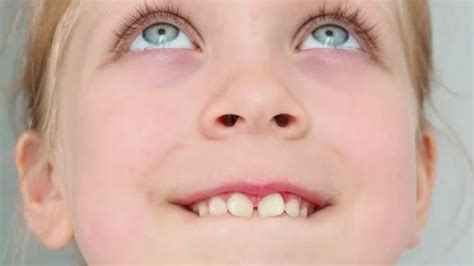

👶 أخطاء بسيطة قد تغير ابتسامة طفلك للأبد

كثيراً ما تلاحظ الأمهات تغيرات في شكل وجه الطفل أو بروزاً في أسنانه دون معرفة السبب. الحقيقة أن بعض العادات اليومية التي تبدو "بسيطة" قد تؤدي إلى مشاكل تقويمية وجراحية معقدة في المستقبل.
احذر من هذه العادات الثلاث:
التنفس عن طريق الفم:
يؤدي غالباً إلى ضيق في الفك العلوي وبروز الأسنان، ويؤثر سلباً على نمو عظام الوجه (ما يعرف بـ "وجه التنفس الفموي").
مص الأصابع أو اللهاية لفترات طويلة:
يتسبب في تشوه قبة الحنك وحدوث "العضة المفتوحة"، مما يجعل إغلاق الأسنان الأمامية مستحيلاً بشكل طبيعي.
إهمال الأسنان اللبنية والخلع المبكر:
الأسنان اللبنية هي "حافظ مسافة" للأسنان الدائمة؛ خلعها مبكراً يسبب تزاحماً شديداً يتطلب تقويماً معقداً لاحقاً.
نصيحة د. نشوان: التدخل المبكر في سن (7-9 سنوات) يوفر على طفلك سنوات من التقويم وآلاف الريالات مستقبلاً.